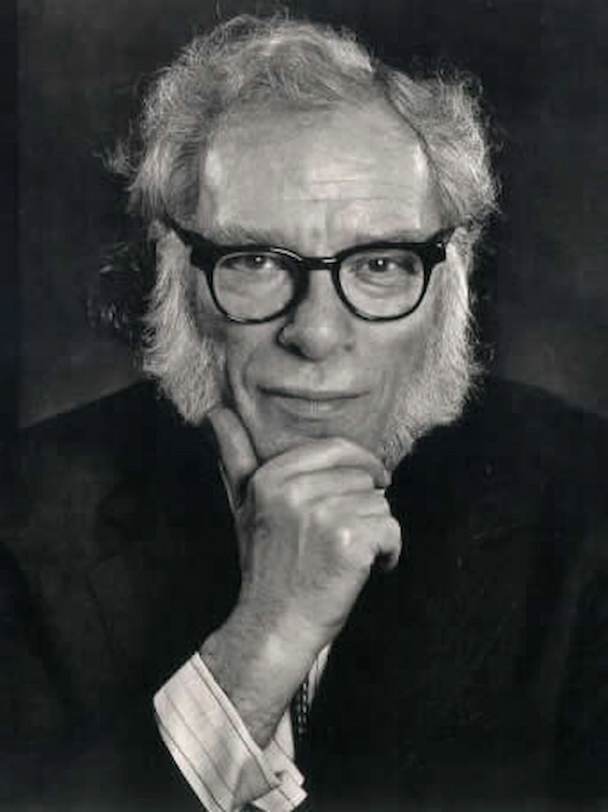

Isaac Asimov

"La violencia es el último recurso del incompetente."
Isaac Asimov (en ruso, Aйзек Азимов; Petróvichi, RSFS de Rusia, 2 de enero de 1920 – Nueva York, 6 de abril de 1992) fue un escritor estadounidense de origen ruso, conocido por ser un prolífico autor de obras de ciencia ficción y divulgación científica. Fue profesor de Bioquímica en la Escuela de Medicina de la Universidad de Boston.
Su obra más famosa es la Serie de la Fundación, también conocida como Trilogía o Ciclo de Trántor, que forma parte de la serie del Imperio Galáctico y que más tarde combinó con su otra gran serie sobre los robots. También escribió obras de misterio y fantasía, así como una gran cantidad de textos de no ficción. En total, firmó más de quinientos volúmenes y unas nueve mil cartas o postales. Sus trabajos han sido publicados en nueve de las diez categorías del Sistema Dewey de clasificación.
Junto con Robert A. Heinlein y Arthur C. Clarke, Asimov fue considerado en vida como uno de los «tres grandes» escritores de ciencia ficción. Se destacó por su capacidad de crear universos imaginarios basados en la ciencia que conocemos.
La mayoría de sus libros de divulgación explican los conceptos científicos siguiendo una línea histórica, retrotrayéndose lo más posible a tiempos en que la ciencia en cuestión se encontraba en una etapa elemental. A menudo brinda la nacionalidad, las fechas de nacimiento y muerte de los científicos que menciona, así como las etimologías de las palabras técnicas.
Fue miembro de Mensa durante mucho tiempo, a cuyos miembros describía como «intelectualmente combativos». Disfrutaba especialmente de su papel como presidente de la Asociación Humanista Estadounidense, una organización de ideología atea.
En 1981 se nombró a un asteroide, el (5020) Asimov, en su honor.
Las 3 Leyes
- 1. Un robot no hará daño a un ser humano ni, por inacción, permitirá que un ser humano sufra daño.
- 2. Un robot debe obedecer las órdenes dadas por los seres humanos, excepto si estas órdenes entran en conflicto con la Primera Ley.
- 3. Un robot debe proteger su propia existencia en la medida en que esta protección no entre en conflicto con la Primera o la Segunda Ley.